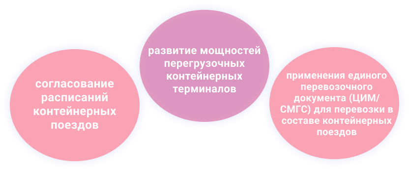

Развитие транзитных перевозок
Стабильность транзитного времени - исполнение расписания движения, как по времени нахождения поезда в пути, так и по времени прибытия на конечный пункт:
Координация процесса перевозки с процессом терминальной обработки: резервирование временных слотов на контейнерных терминалах в соответствии с расписанием движения временем отправления и прибытия контейнерных поездов или вагонных групп и контроль исполнения графиков движения и терминальной обработки.
Совместные решения с европейскими и китайскими интермодальными операторами

Это создаст условия для переключения части грузопотока с автомобильного на железнодорожный маршрут - конкурентоспособный, эффективный и экологичный.
- После присоединения КНР к странам участникам проекта "Накладная ЦИМ/СМГС" появится возможность использования единого перевозочного документа без переоформления и признания таможенными органами накладной ЦИМ-СМГС в качестве таможенного документа.
- Накладная ЦИМ/СМГС является единой унифицированной накладной, используемой при перевозке грузов в страны, применяющие разное международное транспортное право (ЦИМ и СМГС) и оформляется на весь путь следования без переоформления в месте смены транспортного права.
- ОАО "РЖД" прорабатывается вопрос создания крупного международного логистического оператора транзитных перевозок по направлению "Запад-Восток" с участием в капитале широкого круга партнеров.